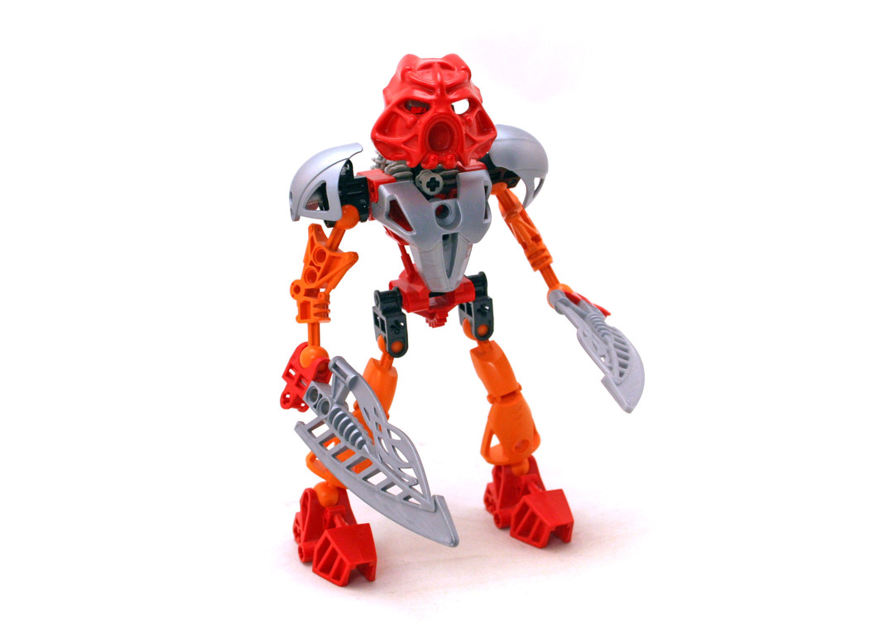

Tahu was a Toa of Fire, and therefore could command fire with his will, withstand extreme heat, create structures from fire, heat the air around him or suck the heat inside himself, emit blasts of fire at enemies, create fire, make sand into glass, and melt many substances. He didn't work well near, in, or under water, though when he received his Magma Swords, he could surf on lava.
Tahu's main Kanohi mask was the Hau, the Mask of Shielding, which could shield against any known attack. It did not work against ambushes or surprising blows. When Tahu transformed into a Toa Nuva, his mask turned into an enhanced version of the Mask Of Shielding. He could use all six Kanohi Nuva as a Toa Nuva, but after the Battle of Ta-Koro during the The Quest for the Seventh Toa, his Suva was consumed by lava, and his Kanohi Nuva with it.
Tahu carried a Fire Sword as a Toa Mata, and as a Toa Nuva, carried two Magma Swords which could be connected together to form a lavaboard. These tools were used to focus Tahu's innate powers.
Tahuwithgoldarmor
Tahu Using the golden armor
Tahu's former Tools as a Toa Mistika were a Rotating Blade and a Nynrah Ghost Blaster
After being devolved back into a Toa Mata, Tahu regained his Fire Sword and now wears the Golden Armor, which grants him the powers of Kraata, such as Heat Vision.

Tahu was the leader of the Toa Mata/Nuva, but was also the fiercest and the most feared. His ideas sometimes clashed with Kopaka's, however they had a mutual respect for each other. His flaming temper could make him hotheaded and irrational at times. Since he had the least patience of the Toa he would jump into a situation without thinking, which could get him, and the other Toa, into a predicament. As time passed, Tahu began to mature and listen to his team more. However, He was very courageous and fiercely protective of his comrades.